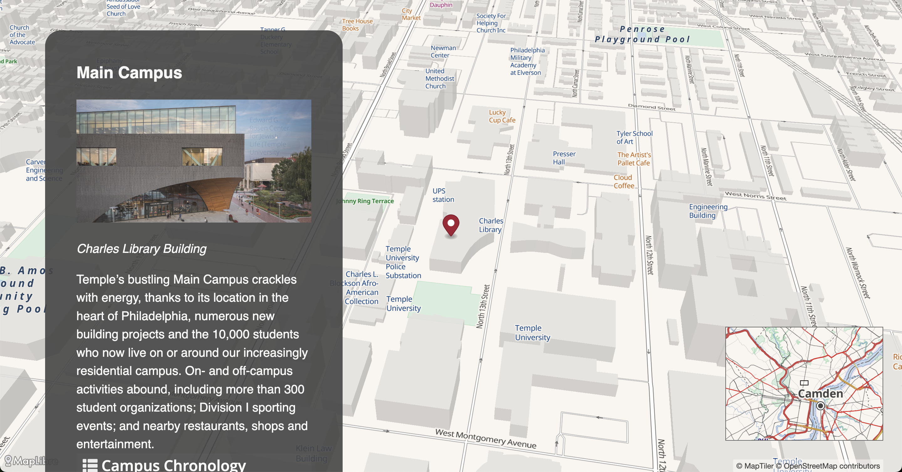

Access the tutorial
Abstrsact
The “Storytelling with MapLibre” tutorial teaches participants how to create interactive map-based stories without coding experience. The workshop demonstrates how maps can enhance storytelling by providing visual context and enabling audience participation. You will learn by duplicating and customizing a pre-built template from Digital Democracy to their own GitHub account, using MapLibre GL JS (an open-source mapping library). This hands-on approach allows anyone to create compelling geographic narratives that combine maps with multimedia elements, which can then be shared on the web for others to explore.
Sample map

 Storymap by Courtney Berne and Felipe Valdez
Storymap by Courtney Berne and Felipe Valdez
Attribution
Storytelling with Maps - Using Maplibre by
Felipe Valdez is licensed under
CC BY-NC-SA 4.0